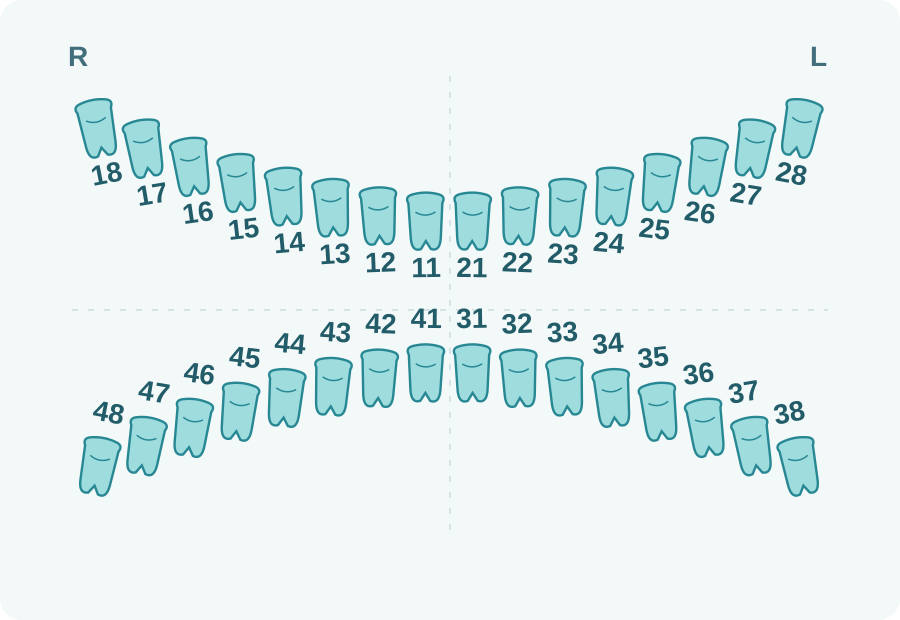
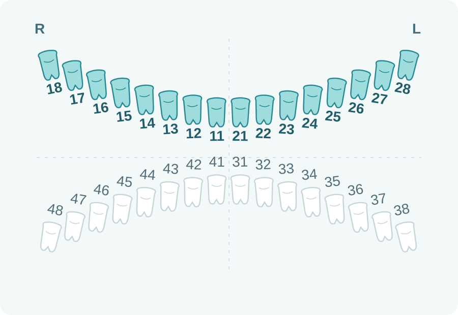
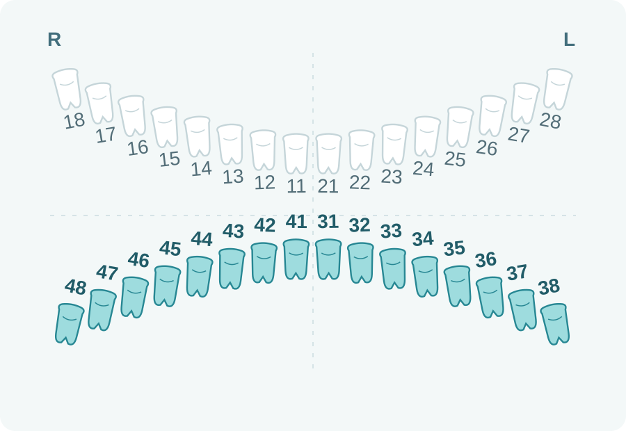
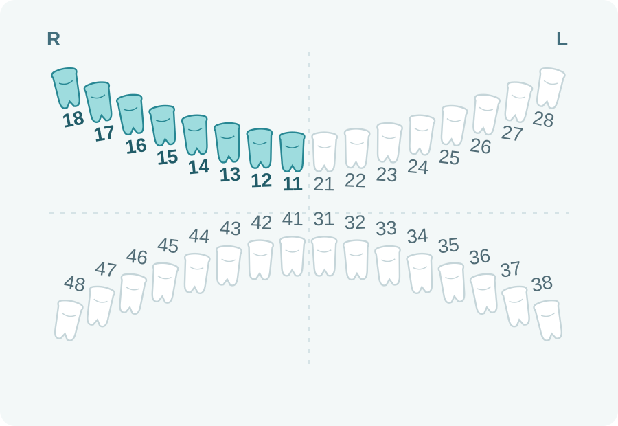
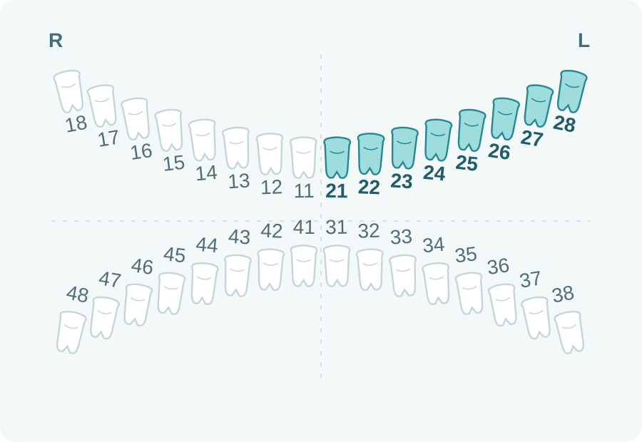
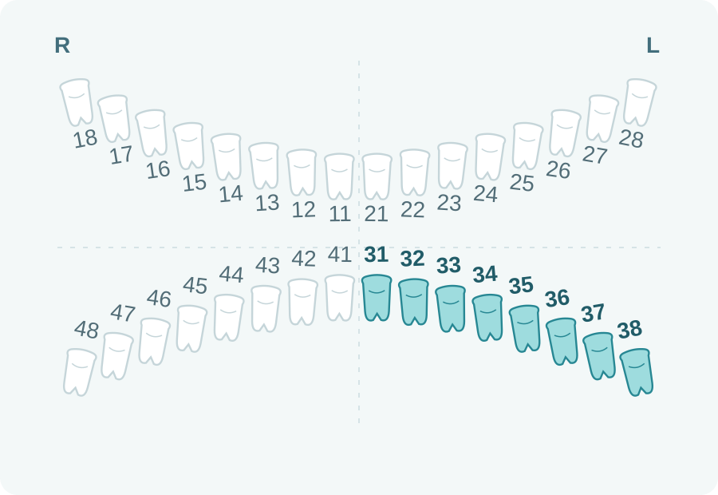
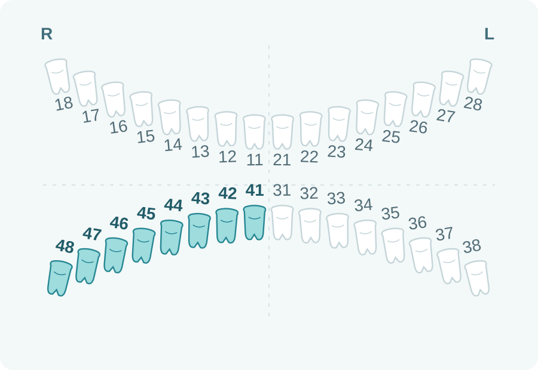
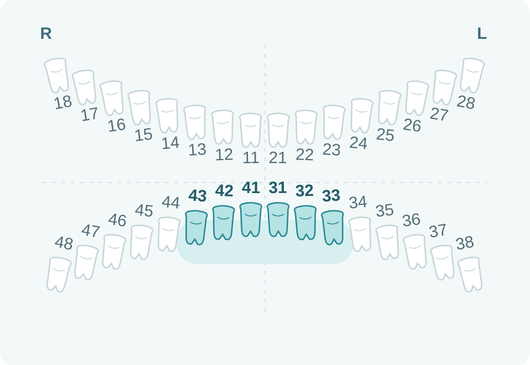
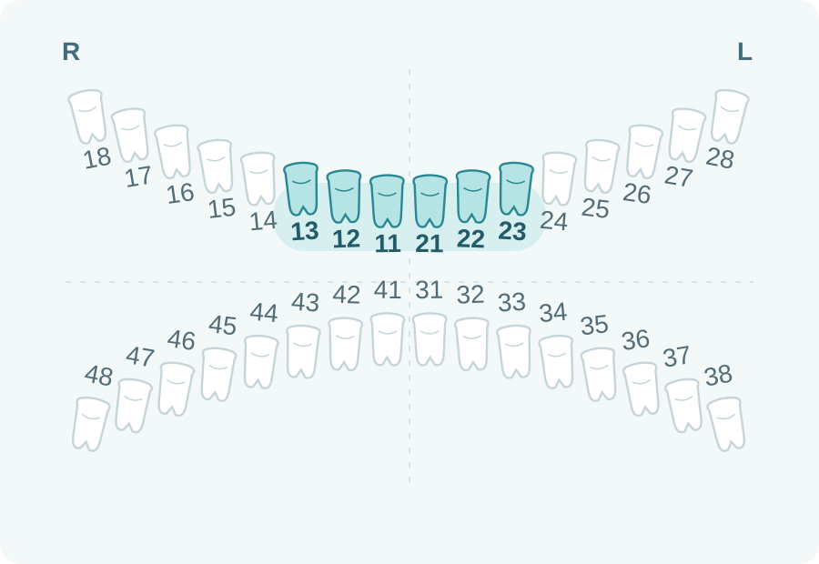
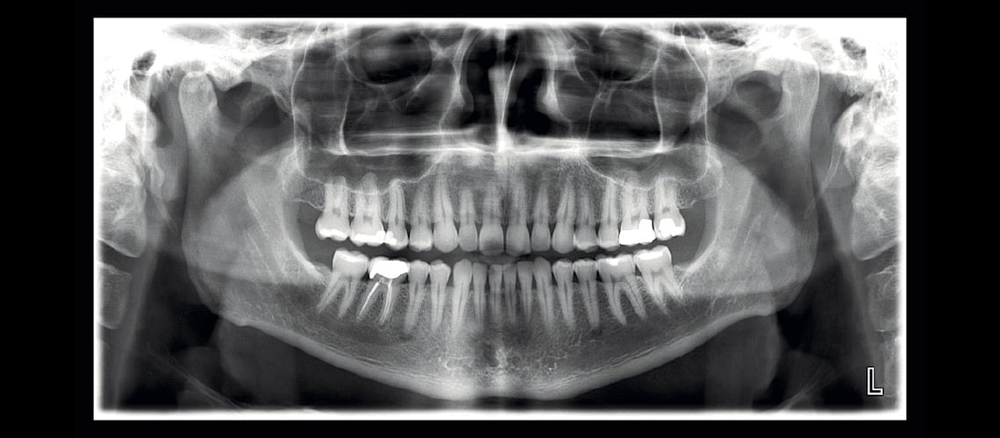

Stomatoloqlar və klinikalar üçünДля стоматологов и клиник
Müalicə sizdə.
Diaqnostika bizdə.Лечение у вас.
Диагностика у нас.
28 May yaxınlığında müstəqil mərkəz. Müayinəni biz aparırıq, pasiyent müalicəsini sizinlə davam etdirir.Независимый центр рядом с метро «28 May». Мы проводим исследование, пациент продолжает лечение у вас.

Pasiyentiniz.
Müalicə planınız.Ваш пациент.
Ваш план лечения.
Biz heç bir stomatoloji klinikaya aid deyilik. Mərkəzin işi diaqnostik görüntüləmədir.Мы не принадлежим стоматологической клинике. Центр проводит диагностические исследования.
Göndərişi siz verirsiniz. Lazım olan nahiyəni dəqiqləşdiririk və nəticələri sizin üçün rahat formatda təqdim edirik.Вы даёте направление. Мы уточняем нужную область и передаём результаты в удобном для вас формате.
Müayinələr və qiymətlərИсследования и цены
Tapşırığa uyğun
müayinə seçin.Выбирайте исследование
под клиническую задачу.
Nahiyəni seçdikdə sxem və ya görüntü nümunəsi, izah və qiymət dəyişir.Нажмите на услугу, чтобы увидеть область или пример снимка, описание и цену.












Müayinə sahəsi həkimin göndərişinə və tibbi göstərişə uyğun seçilir. Sxem dəqiq çəkiliş sərhədlərini göstərmir.Область исследования выбирается по направлению врача и медицинским показаниям. Схема не задаёт точные границы съёмки.

Görüntüləri veririk.
Açmağa kömək edirik.Передаём снимки.
Помогаем их открыть.
- Disk və ya e-poçtДиск или электронная почта
- Uyğun ötürmə üsulunu əvvəlcədən razılaşdırırıq.Удобный способ передачи согласуем заранее.
- Planmeca Romexis
- Uyğun baxış proqramı və faylların açılması ilə bağlı dəstək.Помощь с подходящей программой просмотра и открытием файлов.
Göndərişdən
müalicə planına.От направления
к вашему плану лечения.
- 01
Klinik tapşırıqКлиническая задача
Göndərişdə müayinə növünü və nahiyəni qeyd edin.Укажите в направлении вид исследования и нужную область.
- 02
Müayinə mərkəzdəИсследование в центре
Pasiyent Sahib Zeynalov 26 ünvanına gəlir.Пациент приходит в центр на Sahib Zeynalov, 26.
- 03
Nəticələr həkiməРезультаты врачу
Görüntüləri alırsınız, pasiyent müalicəsini sizinlə davam etdirir.Вы получаете снимки, пациент продолжает лечение у вас.
Həkim üçün tanışlıq dəvətiПриглашение для врача
Mərkəzlə
yaxından tanış olun.Познакомьтесь
с работой центра.
Hər iki çənənin bir pulsuz 3D müayinəsi.Одно бесплатное 3D-исследование обеих челюстей.
Dəvəti başqa şəxsə də verə bilərsiniz. Şərtləri mərkəzlə əvvəlcədən razılaşdırın.Приглашение можно передать другому человеку. Условия согласуйте с центром заранее.
Müayinə tibbi göstəriş olduqda aparılır.Исследование проводится по медицинским показаниям.
Dəvəti müzakirə edəkОбсудить приглашениеŞəhərin mərkəzində.
28 May yaxınlığında.В центре города.
Рядом с «28 May».
Bakı, Sahib Zeynalov küçəsi 26Баку, ул. Sahib Zeynalov, 26Bazar ertəsi – şənbə · 09:00–20:00Понедельник – суббота · 09:00–20:00+994 50 833 73 32Xəritədə axtarНайти на картеHəkim üçün müraciətЗаявка врача
Əməkdaşlığa
buradan başlayaq.Начнём
сотрудничество.
Əlaqə məlumatlarınızı saxlayın. Göndəriş qaydasını, nəticələrin ötürülməsini və əməkdaşlıq şərtlərini birlikdə dəqiqləşdirək.Оставьте контакты. Обсудим направления, передачу результатов и условия сотрудничества.
Göndəriş qaydasını, nəticələrin ötürülməsini və əməkdaşlıq şərtlərini telefonla müzakirə edək.Обсудим по телефону направления, передачу результатов и условия сотрудничества.
Mərkəzlə əlaqə saxlayın.Свяжитесь с центром.
Adınızı və klinikanızı bildirin. Sizinlə əməkdaşlıq barədə danışaq.Назовите своё имя и клинику. Обсудим, как начать сотрудничество.
Mərkəzə zəng edinПозвонить в центр